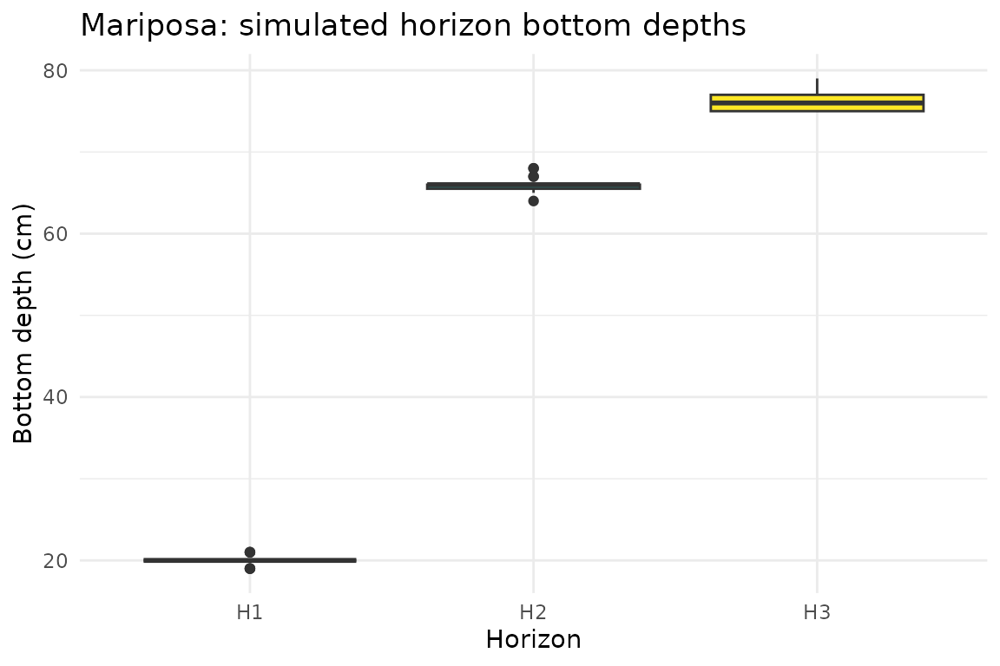
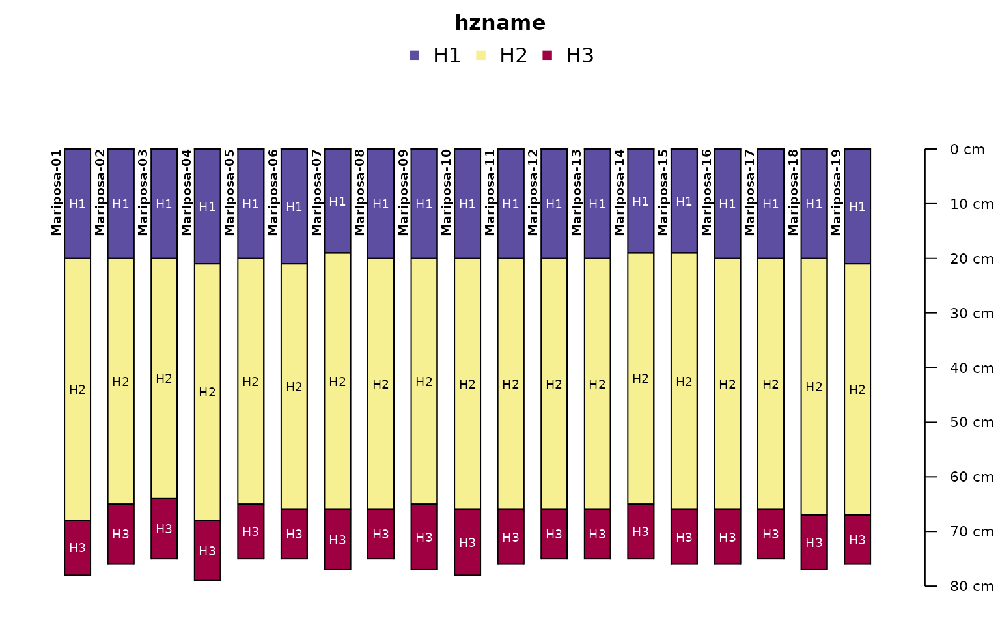
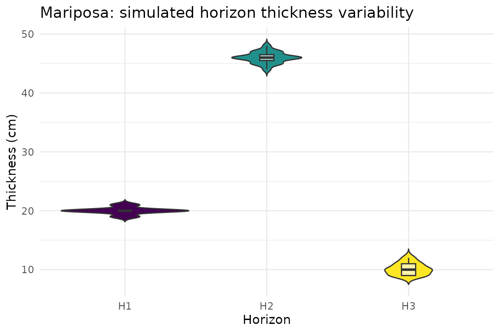

Profile, Component & Depth Simulation with a Real Soil Component
Source:vignettes/profile-depth-simulation.Rmd
profile-depth-simulation.RmdOverview
soilSIM can simulate two related kinds of variability for a real
SSURGO map unit: how much of a map unit a component actually occupies
(component composition), and how variable a component’s horizon depths
and thicknesses are in the field (depth/thickness variability, informed
by Official Series Description boundary-distinctness data). This
vignette demonstrates both, using a real map unit from the same
Amador-area AOI as the “Getting Started” vignette. See
soilSIM/docs/06_profile_component_depth_simulation.md for
the full function-level reference.
The real component
get_aws_data_by_mukey() queries NRCS Soil Data Access
live for a given map unit key. This vignette’s cached data was produced
by that real call (see “Where this data came from” below) for map unit
462255 within the Amador-area AOI, which resolves to a
single real component:
depth_sim_mukey <- readRDS(system.file("extdata", "depth_sim_mukey_data.rds", package = "soilSIM"))
mu_data <- depth_sim_mukey$data
mu_data[, c("cokey", "compname", "comppct_l", "comppct_r", "comppct_h",
"hzname", "hzdept_r", "hzdepb_r", "sandtotal_r", "claytotal_r")]
#> cokey compname comppct_l comppct_r comppct_h hzname hzdept_r hzdepb_r
#> 1 26397825 Mariposa NA 75 NA H1 0 20
#> 2 26397825 Mariposa NA 75 NA H2 20 66
#> 3 26397825 Mariposa NA 75 NA H3 66 76
#> sandtotal_r claytotal_r
#> 1 30.1 15.0
#> 2 22.6 27.5
#> 3 NA NAThis is a real component named “Mariposa”
(cokey 26397825), with 3 horizons and a representative
component percentage of 75% (ranging NA-NA%).
Step 1: Simulate component composition
sim_component_comp() draws n_simulations
triangular samples from each component’s low/representative/high
percentage and derives a single sim_comppct value - the
number of Monte Carlo profile realizations to simulate for that
component:
component_sim <- sim_component_comp(mu_data, n_simulations = 25)
component_sim
#> mukey cokey compname comppct_l comppct_r comppct_h sim_comppct
#> 1 462255 26397825 Mariposa 73 75 77 19With this component’s real NA/75/NA percentage triplet, 25 triangular
draws collapse to sim_comppct = 19 - the number of profile
replicates simulated in the next step.
Step 2: Simulate horizon depth and thickness variability
simulate_profile_depths_by_mukey() orchestrates the full
depth-simulation pipeline for a real mukey: it queries SSURGO, derives
sim_comppct via sim_component_comp() and joins
it onto every horizon (internally - no manual join needed by the
caller), fetches real Official Series Description boundary-distinctness
data for the component name, and perturbs horizon thickness and boundary
depths accordingly:
# The real call this vignette's cached data came from:
simulated_profiles <- simulate_profile_depths_by_mukey("462255", n_simulations = 25, seed = 123)
simulated_profiles <- readRDS(system.file("extdata", "depth_sim_profiles_amador.rds", package = "soilSIM"))
simulated_profiles
#> Loading required namespace: aqp
#> SoilProfileCollection with 19 profiles and 57 horizons
#> profile ID: id | horizon ID: hzID
#> Depth range: 75 - 79 cm
#>
#> ----- Horizons (6 / 57 rows | 10 / 13 columns) -----
#> id hzID hzdept_r hzdepb_r hzname mukey cokey compname sim_comppct
#> Mariposa-01 1 0 20 H1 462255 26397825 Mariposa 19
#> Mariposa-01 2 20 68 H2 462255 26397825 Mariposa 19
#> Mariposa-01 3 68 78 H3 462255 26397825 Mariposa 19
#> Mariposa-02 4 0 20 H1 462255 26397825 Mariposa 19
#> Mariposa-02 5 20 65 H2 462255 26397825 Mariposa 19
#> Mariposa-02 6 65 76 H3 462255 26397825 Mariposa 19
#> thickness_sd
#> 0.85
#> 1.08
#> 1.05
#> 0.85
#> 1.08
#> 1.05
#> [... more horizons ...]
#>
#> ----- Sites (6 / 19 rows | 2 / 2 columns) -----
#> id .oldID
#> Mariposa-01 Mariposa-01
#> Mariposa-02 Mariposa-02
#> Mariposa-03 Mariposa-03
#> Mariposa-04 Mariposa-04
#> Mariposa-05 Mariposa-05
#> Mariposa-06 Mariposa-06
#> [... more sites ...]
#>
#> Spatial Data:
#> [EMPTY]19 simulated profile realizations were produced - matching the
sim_comppct value derived in Step 1. Each realization
independently perturbs the three horizons’ boundary depths:
horizons_df <- aqp::horizons(simulated_profiles)
horizons_df[horizons_df$hzname == "H2", c("id", "hzname", "hzdept_r", "hzdepb_r", "thickness_sd")]
#> id hzname hzdept_r hzdepb_r thickness_sd
#> 2 Mariposa-01 H2 20 68 1.08
#> 5 Mariposa-02 H2 20 65 1.08
#> 8 Mariposa-03 H2 20 64 1.08
#> 11 Mariposa-04 H2 21 68 1.08
#> 14 Mariposa-05 H2 20 65 1.08
#> 17 Mariposa-06 H2 21 66 1.08
#> 20 Mariposa-07 H2 19 66 1.08
#> 23 Mariposa-08 H2 20 66 1.08
#> 26 Mariposa-09 H2 20 65 1.08
#> 29 Mariposa-10 H2 20 66 1.08
#> 32 Mariposa-11 H2 20 66 1.08
#> 35 Mariposa-12 H2 20 66 1.08
#> 38 Mariposa-13 H2 20 66 1.08
#> 41 Mariposa-14 H2 19 65 1.08
#> 44 Mariposa-15 H2 19 66 1.08
#> 47 Mariposa-16 H2 20 66 1.08
#> 50 Mariposa-17 H2 20 66 1.08
#> 53 Mariposa-18 H2 20 67 1.08
#> 56 Mariposa-19 H2 21 67 1.08The second horizon’s simulated bottom depth varies across realizations (thickness standard deviation 1.08 cm) - real, component-specific variability rather than a fixed SSURGO representative value. Plotting the simulated bottom-depth spread per horizon:
ggplot(horizons_df, aes(x = hzname, y = hzdepb_r, fill = hzname)) +
geom_boxplot() +
scale_fill_viridis_d(guide = "none") +
labs(title = paste0(unique(mu_data$compname), ": simulated horizon bottom depths"),
x = "Horizon", y = "Bottom depth (cm)") +
theme_minimal()
Visualizing the simulated profiles directly
Boxplots summarize the spread of bottom depths per horizon, but they
don’t show what any single simulated profile actually looks like, or how
boundary perturbations compound down a profile.
aqp::plotSPC() is the standard way to visualize a
SoilProfileCollection: horizontal soil-profile “sketches,”
stacked side by side, one per realization, color-coded by horizon
designation. Here all 19 simulated realizations are shown together,
making the real perturbed depth boundaries - and how they vary
realization to realization - visible at a glance:
par(mar = c(1, 1, 3, 1))
aqp::plotSPC(simulated_profiles, color = "hzname", width = 0.3,
name.style = "center-center", cex.names = 0.6, cex.id = 0.6,
main = paste0(unique(mu_data$compname), ": simulated profile realizations"))
Beyond bottom-depth position, the actual simulated thickness
of each horizon (hzdepb_r - hzdept_r within each
realization) is another useful view of the same variability, directly
comparable to the thickness_sd values driving the
simulation:
horizons_df$thickness <- horizons_df$hzdepb_r - horizons_df$hzdept_r
ggplot(horizons_df, aes(x = hzname, y = thickness, fill = hzname)) +
geom_violin(trim = FALSE) +
geom_boxplot(width = 0.1, fill = "white", alpha = 0.6, outlier.shape = NA) +
scale_fill_viridis_d(guide = "none") +
labs(title = paste0(unique(mu_data$compname), ": simulated horizon thickness variability"),
x = "Horizon", y = "Thickness (cm)") +
theme_minimal()
Known limitation this vignette’s data illustrates
The third horizon (H3) in this real component is missing its
sandtotal_h/claytotal_h (upper bound) values -
a genuine SSURGO data gap, not a simulation artifact. soilSIM’s
evaluate_simulated_depths() QC function (see
soilSIM/docs/06_profile_component_depth_simulation.md)
flags exactly this kind of gap: it can only assess whether a simulated
depth falls outside a horizon’s original low/high bounds when those
bounds are actually present in the source data.
Where this data came from
The cached data this vignette loads
(inst/extdata/depth_sim_mukey_data.rds,
inst/extdata/depth_sim_profiles_amador.rds) was produced
once by data-raw/build_vignette_data.R, which calls
process_aoi_and_get_mukeys_working(),
get_aws_data_by_mukey(), and
simulate_profile_depths_by_mukey() live against NRCS Soil
Data Access and the Official Series Description database. Re-run that
script to refresh it (the real mukey it resolves to may change if SSURGO
data for this AOI is updated).